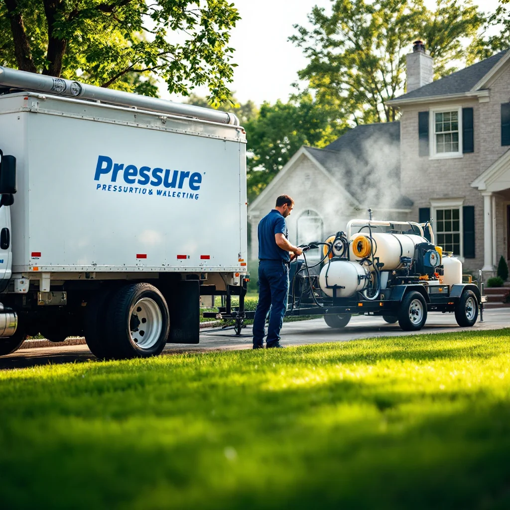

About Knox Pressure Pros

A locally operated team bringing professional exterior cleaning to Knoxville and surrounding communities.
Who We Are
Knox Pressure Pros is a locally operated pressure washing company based right here in Knoxville, Tennessee. We got into this business because we saw too many homeowners paying too much for inconsistent results — or worse, dealing with damage from inexperienced operators using the wrong equipment.
Our team focuses on doing the job right the first time. That means using the correct pressure settings for each surface, applying professional-grade cleaning solutions where needed, and treating your property with the same care we'd give our own.
Why We're Different
We're not a franchise, and we're not a side hustle. Pressure washing is what we do, every day. That specialization means we understand the nuances — like why you never high-pressure wash a roof, why soft washing is better for vinyl siding, and how Tennessee's humid climate creates unique cleaning challenges that generic approaches can't solve.
- Locally operated — we live and work in the Knoxville area
- Fully licensed and insured — protecting you and your property
- Professional-grade equipment — commercial machines, not consumer units
- Eco-friendly cleaning solutions — safe for your landscaping, pets, and family
- Transparent pricing — honest quotes with no hidden fees or upselling
Our Approach
Every job starts with an assessment. We look at the surface type, the level of buildup, and any areas that need special attention. From there, we recommend the right method — whether that's traditional pressure washing for concrete and hardscapes, or a gentle soft wash for your home's siding and roof.
We clean up after ourselves, we communicate clearly about timing and pricing, and we stand behind our work. If you're not satisfied, we'll come back and make it right.
Serving the Knoxville Community
We're proud to serve homeowners and businesses across Knox County and beyond, including Farragut, Powell, Bearden, Halls, Fountain City, Karns, West Knoxville, and Maryville. Whether it's a single driveway or an entire commercial complex, we bring the same level of professionalism to every project.
Ready to See the Difference?
Get a free estimate for pressure washing at your Knoxville property.
Request Your Free Estimate